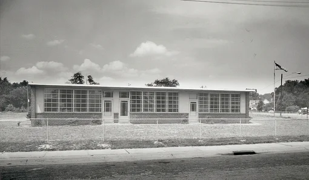
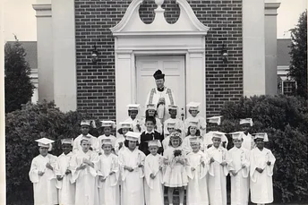
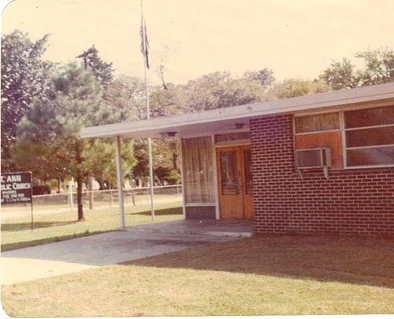
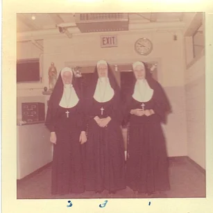
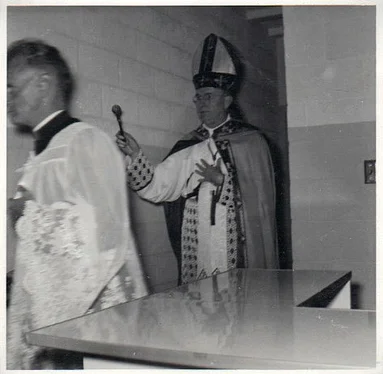

A Legacy of Excellence Since 1956
St. Ann Catholic School began with a bold Catholic mission: to educate children in Fayetteville regardless of race, background, or religious preference.
Parishioners of St. Ann, their pastor Father Edward Moan, O.M.I., and Bishop Vincent S. Waters worked together to open a school that would serve the neighborhood around St. Ann Church and the military families of Fort Bragg. Classes began on September 4, 1956, with 102 children in kindergarten through sixth grade.

Founded to Welcome Every Child
From the beginning, St. Ann was an integrated school. The first student body included Catholic and non-Catholic children, African-American and white students, and families who valued a Catholic education during a pivotal time in North Carolina history.
Bishop Waters wrote that no better work could be done than the work of mission parishes in Fayetteville, where service personnel and their families were being helped by parochial schools. That founding spirit continues to shape St. Ann today.
Archival Moments




Our Journey Through the Decades
Ground Broken and Classes Begin
Ground was broken on June 3, 1956. The Sisters of Providence arrived in August, and classes officially began on September 4 with 102 children in grades K-6.
First Eighth Grade Graduates
The first graduating class of ten eighth graders received diplomas at the end of the 1958-1959 school year.
Four-Classroom Addition
After Bishop Waters called for immediate expansion, four classrooms, new lavatories, a teachers' lounge, and a janitor's supply closet were added to the school.
Highest Enrollment
Student enrollment reached its historic high during the 1963-1964 school year, with 285 students enrolled in grades 1-8.
Daughters of Charity Arrive
After the Sisters of Providence departed in 1972, the Daughters of Charity of Emmitsburg, Maryland began serving St. Ann for the 1973-1974 school year.
Neighborhood Youth Center Wing
A new wing was built to support the Neighborhood Youth Center, adding offices, a multi-purpose room, classrooms, a teachers' lounge, and restrooms.
50th Anniversary
St. Ann celebrated 50 years of Catholic education while also preparing for a new era as the Daughters of Charity announced their departure.
Rene Corders Named Principal
St. Ann alumna Rene Corders was selected as principal, bringing leadership experience and a lifelong connection to the school and parish community.
Mobile Technology Expansion
With fundraising help from the School Volunteer Organization, 50 touchscreen laptops were purchased, and interactive white boards and projectors were installed in classrooms.
Our Pioneering Legacy
First All-Inclusive School
Breaking barriers in 1956, we welcomed students regardless of race, color, or religious background—a revolutionary approach that continues today.
Military Family Heritage
Service personnel and families from Fort Bragg were part of the school's mission from the beginning.
Community Cornerstone
Serving as an academic beacon in downtown Fayetteville, supported by St. Ann Parish and neighboring parishes for 70 years.
Educational Excellence
Generations of students who "entered to learn and departed to serve," making positive impacts in their communities and beyond.
Continuing Our Tradition
Today, St. Ann Catholic School continues to honor its founding principles while embracing modern educational approaches. We maintain our commitment to serving all families, particularly our military community, while providing rigorous academic preparation rooted in Catholic values.
Our small class sizes (11:1 student-teacher ratio), licensed professional faculty, and comprehensive programs from Pre-K through 8th grade ensure that every child receives the individual attention and quality education that has been our hallmark for 70 years.
As we look to the future, we remain committed to our motto: "Enter to Learn; Depart to Serve," preparing each student to make a positive difference in the world while staying true to our pioneering spirit of inclusion and excellence.